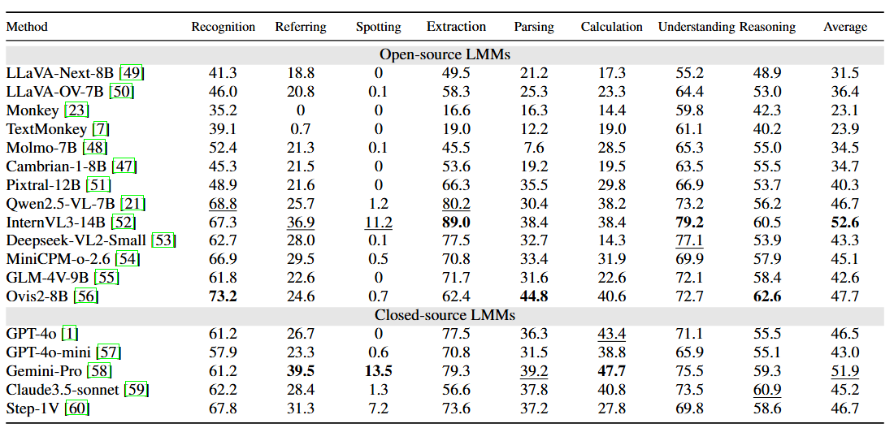

Scoring the Optical Character Recognition (OCR) capabilities of Large Multimodal Models (LMMs) has witnessed growing interest. Existing benchmarks have highlighted the impressive performance of LMMs in text recognition; however, their abilities in certain challenging tasks, such as text localization, handwritten content extraction, and logical reasoning, remain underexplored. To bridge this gap, we introduce OCRBench v2, a large-scale bilingual text-centric benchmark with currently the most comprehensive set of tasks (4X more tasks than the previous multi-scene benchmark OCRBench), the widest coverage of scenarios (31 diverse scenarios), and thorough evaluation metrics, with 10,000 human-verified question-answering pairs and a high proportion of difficult samples. Moreover, we construct a private test set with 1,500 manually annotated images. The consistent evaluation trends observed across both public and private test sets validate the OCRBench v2's reliability. After carefully benchmarking state-of-the-art LMMs, we find that most LMMs score below 50 (100 in total) and suffer from five-type limitations, including less frequently encountered text recognition, fine-grained perception, layout perception, complex element parsing, and logical reasoning..
Leaderboard
Performance of LMMs on English tasks of public data
Performance of LMMs on Chinese tasks of public data

Performance of LMMs on English tasks of private data

Performance of LMMs on Chinese tasks of private data

BibTeX